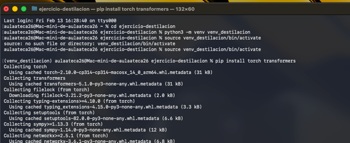
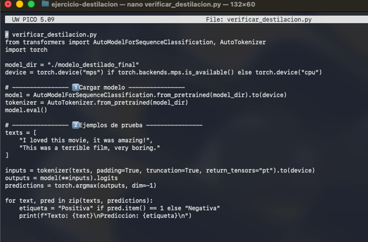
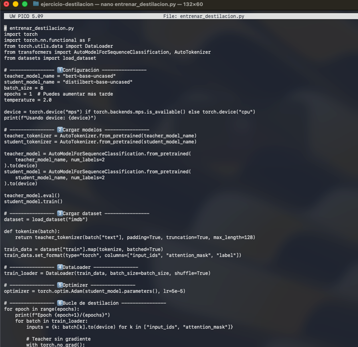
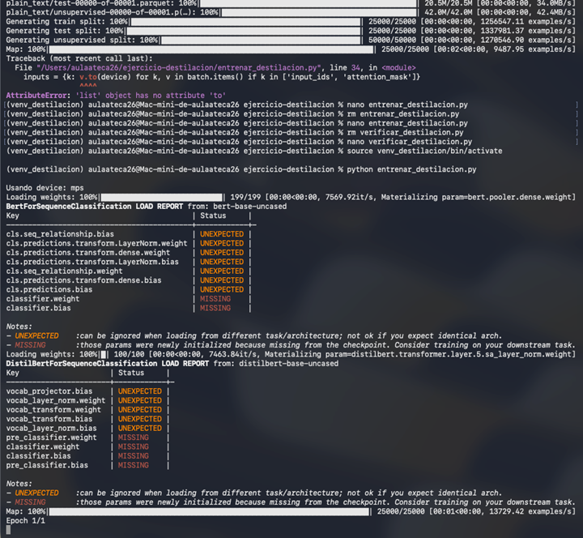
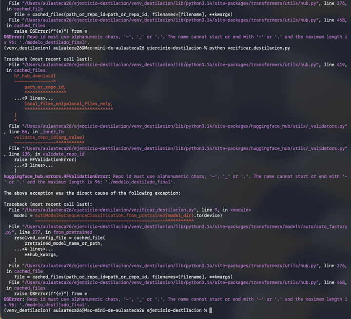

Paso 1: Entorno Virtual
Se establece el espacio de trabajo aislando las librerías necesarias para el proyecto.
python3 -m venv venv_destilacion
source venv_destilacion/bin/activate
pip install torch transformers
Configuración de los Modelos
| Parámetro | Modelo Teacher | Modelo Student |
|---|---|---|
| Nombre | bert-base-uncased | distilbert-base-uncased |
| Batch Size | 8 | 8 |
| Épocas | - | 1 |
| Temperatura | - | 2.0 |

Paso 2: Verificación del Modelo
Implementación de la lógica para cargar el modelo destilado y realizar inferencias de prueba.
nano verificar_destilacion.py

Paso 3: Lógica de Destilación
Script principal que gestiona la transferencia de conocimiento del Teacher al Student.
nano entrenar_destilacion.py
Análisis de Fallos y Soluciones

Error: AttributeError: 'list' object has no attribute 'to'.
Solución: Transformar el dataset a formato torch antes de la iteración.

Error: HFValidationError / Repo ID no válido.
Solución: Ajustar la ruta del directorio local eliminando prefijos de URL o caracteres no alfanuméricos.